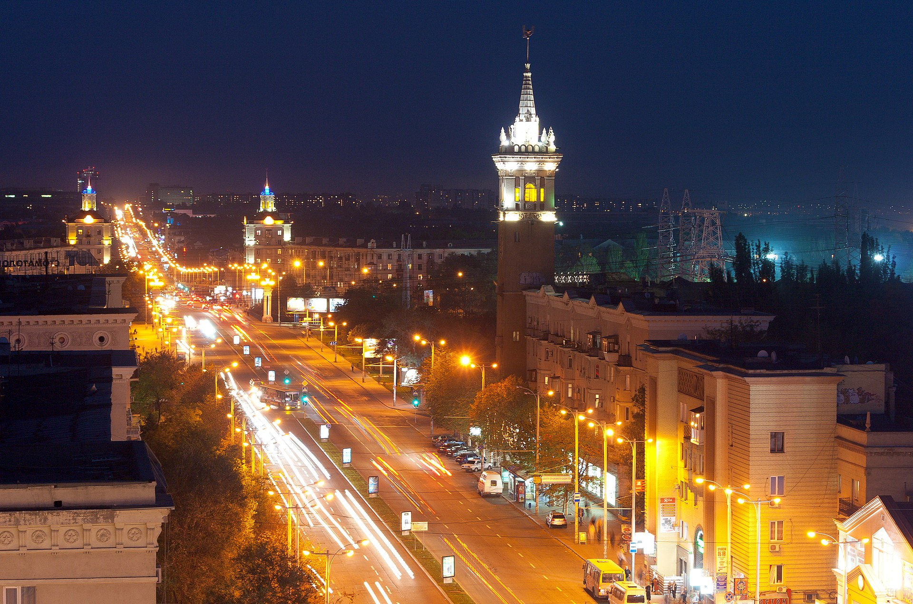

Місце народження: 15 липня 2002 року, м. Запоріжжя
Освіта: Ліцей №99, м. Запоріжжя;
НТУУ "КПІ", м.Київ
Хоббі:
Улюбленні фільми:
Запорі́жжя (до 1921 року — Олекса́ндрівськ) — місто в Україні, адміністративний центр Запорізької області. За кількістю населення — шосте місто країни (710 052 станом на 1 січня 2022 року). Розташоване на головній воднотранспортній магістралі України — річці Дніпро, у місці її перетину транспортно-комунікаційними коридорами, що з'єднують південь країни зі столицею України, західними та центральними областями України, Донбас із Криворіжжям.
